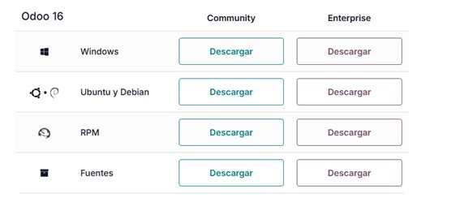
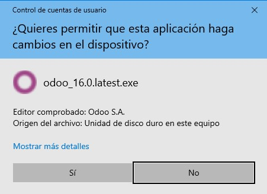
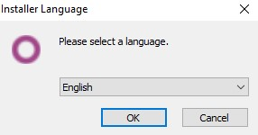
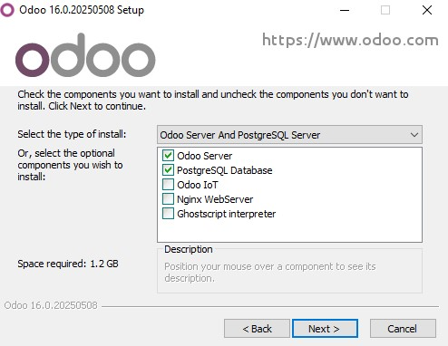
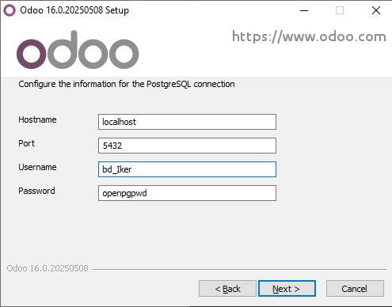
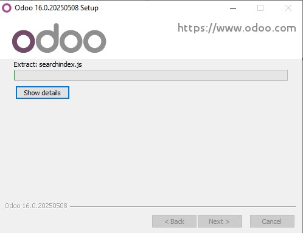
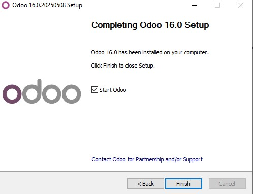

Pasos para instalar Odoo
Sigue los pasos detallados a continuación para instalar Odoo en tu sistema:
1. Descargar Odoo
Accede al sitio oficial de Odoo y selecciona la versión que deseas instalar. En este caso, descargaremos la versión 16.
2. Permitir la instalación
Haz doble clic en el archivo descargado y selecciona "Permitir" si el sistema solicita permisos.
3. Seleccionar idioma
En la primera pantalla del instalador, selecciona "Inglés" como idioma y haz clic en "Siguiente".
4. Configuración inicial
No cambies ninguna configuración predeterminada y haz clic en "Siguiente".
5. Configurar el nombre de usuario y la base de datos
Introduce un nombre de usuario para tu instalación, como "usuario_bd", y haz clic en "Siguiente".
6. Instalación
Espera a que el instalador copie todos los archivos necesarios y configure el sistema. Este proceso puede tardar unos minutos.
7. Iniciar Odoo
Abrimos Odoo.
